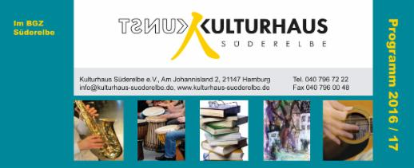
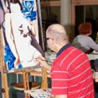
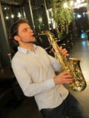
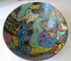
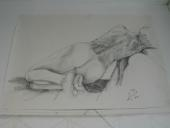
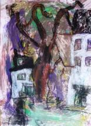
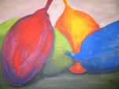
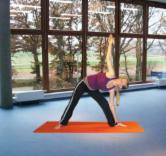

| 7 KURSPROGRAMM WINTERSEMESTER 2016/17 |
Semesterbeginn am 1. September 2017  Unser Programmflyer hier zum download: Kursprogramm 2016/17 Kursdauer / Semester ist 18x3 Zeitstunden, wenn nicht anders angegeben. Wir bitten um Verständnis, dass bei zu niedriger Teilnehmerzahl der einzelnen Kurse nach Absprache entweder die Kursdauer gekürzt oder die Kursgebühr erhöht wird (siehe "Teilnahmebedingungen").Kursgebühren für Kinder können über das "Bildungspaket" abgerechnet werden. Mehr Infos finden Sie hier: www.hamburg.de/bildungspaket/ |
| Montag |
Ölmalerei
Mit Farben experimentieren und dabei eigene Fähigkeiten entdecken, unabhängig von Vorkenntnissen und sonstigen Voraussetzungen - das ermöglichen die beiden Fachfrauen für Ölmalerei, Margrit Werner und Gabriele Wendland. Dabei spielt die genseitige Anregung in der Gruppe und das gemeinsame Arbeiten unter fachgerechter Anleitung die Hauptrolle. Es gibt keine Erwartungen und keinen Zwang, "nur" die Vermittlung von Techniken in qualifizierter Form.

Beginn: Montag, 6.2.17, von 10-13 Uhr
Kursleitung: Margrit Werner
Beginn: Montag, 6.2.17, von 18.30-21.30 Uhr
Kursleitung: Gabriele Wendland
Kursgebühr: € 120,- / Semester
Beginn: Montag, 6.2.17, von 10-13 Uhr
Kursleitung: Margrit Werner
Beginn: Montag, 6.2.17, von 18.30-21.30 Uhr
Kursleitung: Gabriele Wendland
Kursgebühr: € 120,- / Semester
Afrikanisches Trommeln
Aliou Badji ist Trommler, Choreograf und Tänzer. Mit dem senegalesischen Nationalballett tourte er um die ganze Welt, bis er sich in Hamburg niederließ. Dort gründete er die Musik- und Tanzformation "Diamoral" und unterrichtet an zahlreichen Schulen.
Trommeln bitte mitbringen - diese können auch über die Trommelschule NeuWulmstorf geliehen werden. Neue TeilnehmerInnen sind herzlich willkommen; eine Probestunde ist möglich.

Beginn: Auf Anfrage
Kursleitung: Aliou Badji
www.diamoral.de
Kursgebühr: € 130,- für 15 Male
| Montag / Donnerstag |
Gitarrenunterricht
Peter Karliczek unterrichtet seit vielen Jahren E-Bass, akustische und E-Gitarre im Kulturhaus. Er arbeitet nch Tabulatur und frei. Liedbegleitung, Rhythmik, Timing und Fingerfertigkeit sind Themenschwerpunkte des Unterrichts.
Akustische Gitarre: In Gruppen bis zu vier Personen stundenweise.
E-Gitarre: Einzelunterricht eine halbe Stunde. Blues, Rock, Folk, Slide und Free.
Zusätzlich berät Peter Karliczek bei Kauf und Anpassung des Instruments an die Schüler.
E-Bass: Einzelunterricht eine halbe Stunde. Bevorzugt Blues, Funk und Groove.

Beginn: Montag, 6.2.17 von 14.30-22.00 Uhr
Donnerstag 2.2.17 von 14.30-22.00 Uhr
Kursleitung: Peter Karliczek
Kursgebühren: Gruppenunterricht € 140,- / Semester, € 115,- / Semester für Kinder
Einzelunterricht € 300,- / Semester, € 250,- / Semester für Kinder
Die Abrechnung der Kursgebühr für Kinder ist über das "Bildungspaket" möglich.
Saxophon, Klarinette, Blockflöte, Klavier
Dimitar Georgiev, hervorragend ausgebildeter Musiker und Pädagoge aus Bulgarien mit dem Spezialgebiet Saxophon und Klarinette, aber auch Musiktheorie und Klavier, unterrichtet an Musikschulen und Schulen im Hamburger Raum und dem Umland.
Die genauen Uhrzeiten werden mit den TeilnehmerInnen individuell abgestimmt.

Beginn: Montag, 6.2.17 von 14-20 Uhr
Kursleitung: Dimitar Georgiev
Kursgebühr: € 60,- monatlich für 18 Male 1/2 Stunde Einzelunterricht / Semester
| Montag / Freitag |
Keramik (Aufbautechnik)
"Figur, Gefäß, Relief, damit sind alle Themenbereiche erfasst", sagt Fachfrau Dörte Ellerbrock, die, egal welche ausgefallenen Themen die KursteilnehmerInnen an sie herantragen, gelassen darauf reagiert. Außer traditionellen Gefäßen entstehen Gartenkeramiken und große Mosaike für Terrassen oder Wände, große und kleine Figuren, Tiere, Menschen und freie Formen.

Beginn: Montag, 6.2.17, von 15-18 Uhr
Freitag, 3.2.17, von 17-20 Uhr
Kursleitung: Dörte Ellerbrock
Kursgebühr: € 120,- / Semester
Kundalini-Yoga / VHS-Kurs
Informationen über Kursinhalte, Kurszeiten und Gebühren sowie die Anmeldung unter
Telefon 040 771 10 303 bzw. www.vhs-hamburg.de
Montags von 17.00-18.30 Uhr und 18.30-20.00 Uhr
Kursleitung: Helga Hentschel
| Dienstag |
Maltechniken
Aquarell, Acryl, Kreiden ..... Gabriele Wendland, freiberufliche Künstlerin aus Hamburg, ist bekannt durch viele Ausstellungen und u.a. ihre Arbeit an der Kunsthalle Hamburg. Sie passt die Kursinhalte ihren KursteilnehmerInnen an und betreut sie individuell.
Ob jung oder alt, fortgeschritten oder Anfänger: In dieser Gruppe findet jeder seinen Platz!

Beginn: Dienstag, 7.2.17, von 10-13 Uhr
Kursleitung: Gabriele Wendland
www.gabriele-wendland.de
Kursgebühr: € 120,- / Semester
Töpferschule für Kinder
Unter der fachkundigen Anleitung von Künstlerin Teresa Werdier können Kinder kneten, formen und sich durch das urtümliche Material Ton in ihrer Fantasie beflügeln lassen. Ton eignet sich hervorragend, um Motorik und Sensibilität von Händen und Fingern zu trainieren und zu stabilisieren und auf spielerische Weise Techniken in Aufbau und Oberflächengestaltung zu erlernen.

Beginn: Dienstag, 7.2.17, von 16.30-18.00 Uhr
Kursleitung: Teresa Werdier
Kursgebühr: € 80,- für 15 Male exkl. Material
Abrechnung der Kursgebühr über das "Bildungspaket" ist möglich.
Figürliches Zeichnen/Akt
Mit wechselnden Modellen (weiblich/männlich) wird hier das Auge trainiert, die menschlichen Formen in all ihrer Vielfalt und Beweglichkeit erfasst und mit Hilfe verschiedener Techniken zu Papier gebracht.
Aktzeichnen ist die Grundlage für jede Art der figürlichen Darstellung!

Beginn: Dienstag, 7.2.17, von 18.30-21.30 Uhr
Kursleitung: Dörte Ellerbrock
Kursgebühr: € 160,- inkl. Modellkosten
Yoga
Informationen über Kursinhalte, Kurszeiten und Kosten sowie Kursanmeldung bitte direkt unter Telefon: 040 765 62 92, Email: etrudzinski@web.de
Dienstags von 20.00-21.30 Uhr
Kursleitung: Elisabeth Trudzinski
| Dienstag / Mittwoch |
Klavier / Gesang
Bettina Sehlbach, Pädagogin für Klavier und Gesang, unterrichtet an mehreren Orten in Hamburg und Umgebung.
Die Zeiten innerhalb der beiden Tage werden individuell mit den TeilnehmerInnen abgestimmt.

Beginn: Dienstag, 7.2.17 / Mittwoch, 1.2.17
Kursleitung: Bettina Sehlbach
www.musik-sehlbach.de
Kursgebühr: € 60,- monatlich für 1/2 Std. Einzelunterricht / 18 Male (5 Monate)
Für Kinder ist die Abrechnung über das "Bildungspaket" möglich.
| Mittwoch |
Kindermalschule
Gabriele Wendland bietet in der Kindermalschule Kindern von 5-10 Jahren viel Spaß mit dem Medium Kunst.
Verschiedene Maltechniken und Stilrichtungen werden mit vielen Materialien ausprobiert und nach den Vorstellungen der Kinder umgesetzt.

Beginn: Mittwoch von 16.00-17.30 Uhr auf Anfrage
Kursleitung: Gabriele Wendland
www.gabriele-wendland.de
Kursgebühr: € 75,- für 15 Male
Die Abrechnung über das Bildungspaket ist möglich.
Teatimetalk
Informationen über Kursinhalte, Kurszeiten und Gebühren sowie Kursanmeldungen finden Sie unter www.teatimetalk.de, direkt unter Telefon 040 702 95 373; Email: info@teatimetalk.de
Mittwochs, 18.45-20.30 Uhr
Kursleitung: Henry Holland
| Mittwoch / Donnerstag |
Holzbildhauerei
Zwei Künstler mit Spezialgebiet Holzbildhauerei unterrichten regelmäßig im Kulturhaus:
Christian Richert und Yves Rasch. Beide fördern ihre KursteilnehmerInnen individuell und unterstützen die eigenschöpferische Entwicklung und Umsetzung in figürliche oder abstrakte Arbeiten.
Eine Probestunde und ein späterer Einstieg sind möglich! Bitte im Büro nachfragen.
Beginn: Mittwoch, 1.2.17, von 17-20 Uhr
Kursleitung: Christian Richert
maha-richi.jimdo.com
Beginn: Donnerstag, 2.2.17, von 9-12 Uhr
Kursleitung: Yves Rasch
www.schwuenge.de
Beginn: Donnerstag, 2.2.17, von 15-18 Uhr
Kursleitung: Christian Richert
maha-richi.jimdo.com
Kursgebühren: € 145,- für 15-18 Male je nach Gruppengröße
| Mittwoch / Freitag |
Aquarellmalerei
Sehen lernen und das Gesehene in ein Bild umsetzen möchten viele - alles, was dazugehört, ist Geduld mit sich selbst und fachliche Unterstützung, um spielerisch mit Farben umgehen zu lernen, sie gezielt einzusetzen und damit einen eigenen Stil zu entwickeln. Alles das findet man in den Aquarellkursen, die u.a. Themen wie Landschaft, Stillleben oder Porträt behandeln.

Beginn: Mittwoch, 1.2.167, von 18.30-21.30 Uhr
Kursleitung: Elke Nack-Karstens
www.elkenack-karstens.de
Beginn: Freitag, 3.2.17, von 10-13 Uhr
Kursleitung: Angelika Holzmann
Kursgebühr: € 120,-
| Donnerstag |
Stillleben, Zeichnen und mehr
Es sind nicht nur Stillleben, die in diesem Kurs entstehen, sondern auch Porträts, Landschaften oder, wenn das Auge ermüdet ist, auch mal Kollagen, Materialbilder oder Monotypien. Es wird aquarelliert, gezeichnet, gemalt und mit Pastellkreiden gearbeitet. Der Kurs hat TeilnehmerInnen ab 10 Jahren, die mit allen anderen Altersgruppen ein Superteam bilden!

Beginn: Donnerstag, 2.2.17, von 15-18 Uhr
Kursleitung: Dörte Ellerbrock
Kursgebühr: € 120,-
Geige / Gesang
Dietwalt Mauruschat, freier Musiker und Spezialist für Violine, Viola und Gesang, ist viel auf Konzert- und Opernbühnen unterwegs. Er unterrichtet außer im Kulturhaus an vielen Orten Hamburgs.

Beginn: Donnerstag, 2.9.17; Uhrzeiten nach Absprache
Kursleitung: Dietwalt Mauruschat
www.violine-gesang.de
Kursgebühr: € 70,- monatlich 1/2 Stunde Einzelunterricht / Semester (5 Monate, 18 Male)
Die Abrechnung der Kursgebühr für Kinder ist über das "Bildungspaket" möglich.
Energy Dance / Yoga
Energy Dance ist Bewegungstraining für alle, die Lust auf Bewegung und Rhythmus haben. Vielfältige dynamische Bewegungen werden zu fließenden Abläufen verbunden, ganz ohne Choreografie. Jeder kann mitmachen!
Energy Dance aktiviert das Herz-Kreislauf-System, erhöht das eigene Körpergefühl und die Flexibilität, verbessert die Körperhaltung, baut Stress ab und macht einfach Spaß.
Aus dem Yoga werden intensive Körperübungen zur Dehnung und Kräftigung der Muskulatur kombiniert. Erholsame Entspannung rundet den Abend ab.

Beginn: Donnerstag, 2.2.17, von 19.30-21.30 Uhr
Kursleitung: Kristine Drengere
Kursgebühr: € 120,-
Acrylmalerei
Die Bandbreite des Kurses schließt sowohl naturalistisches als auch abstraktes Arbeiten mit ein, ebenso Techniken von Nass-in-Nass (wie beim Aquarellmalen) bis Impasto (wie beim Ölmalen). Kursleiter ist Branimir Georgiev, ein Künstler mit Bilderbuchlebenslauf. Er ist Kunstpädagoge, Maler, Zeichner, Grafiker und Mediengestalter, der bereits in seiner Heimat Bulgarien Auszeichnungen für seine Arbeiten erhalten hat.

Beginn: Donnerstag, 2.2.17, von 18.30-21.30 Uhr
Kursleitung: Branimir Georgiev
www.brageo.de
Kursgebühr: € 120,-
Tanzpiraten
Wiebke Heinrich, Tanzpädagogin mit viel Erfahrung mit Kids - auch in Schulen - setzt den Bewegungsdrang der Kinder in Rhythmusgefühl und motorische Koordination um. Sie nutzt dabei die Grundlagen des Balletts in Bezug auf Balance und Aufrichtung, die Grundlagen von Hip Hop und Breakdance zur Schulung verschiedener Bewegungsqualitäten bis hin zur Akrobatik und die freie Improvisation zur Förderung von Selbstständigkeit, Kreativität und Ausdrucksfähigkeit.

Für Kinder ab 3 Jahre
Beginn: Donnerstag, 2.2.17 von 16.30-18 Uhr
Kursleitung: Wiebke Heinrich
Kursgebühr: € 75,- für 15 Male
Abrechnung über das Bildungspaket möglich!
| Freitag |
Feldenkrais / VHS-Kurs
Informationen über Kursinhalte, Kurszeiten und Gebühren sowie Anmeldungen unter
www.vhs-hamburg.de oder Telefon 040 771 10 303
Freitags von 9.00-10.30 Uhr
und von 10.30-12.00 Uhr
Kursleitung: Anne Wechmann
www.anne-wechmann.de
Freie Ateliergemeinschaft L.A.R.S.
Informationen bitte direkt über Susanne Brussolo
Telefon 040 701 50 30 oder mobil 0173 613 11 77
Freitags von 18.30-21.30 Uhr
Ansprechpartnerin: Susanne Brussolo